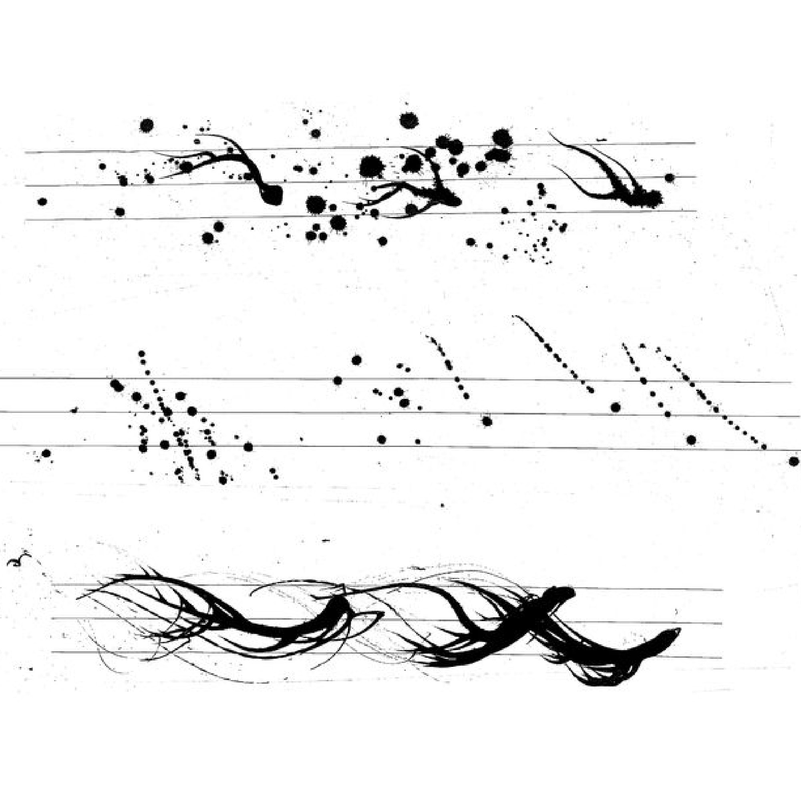
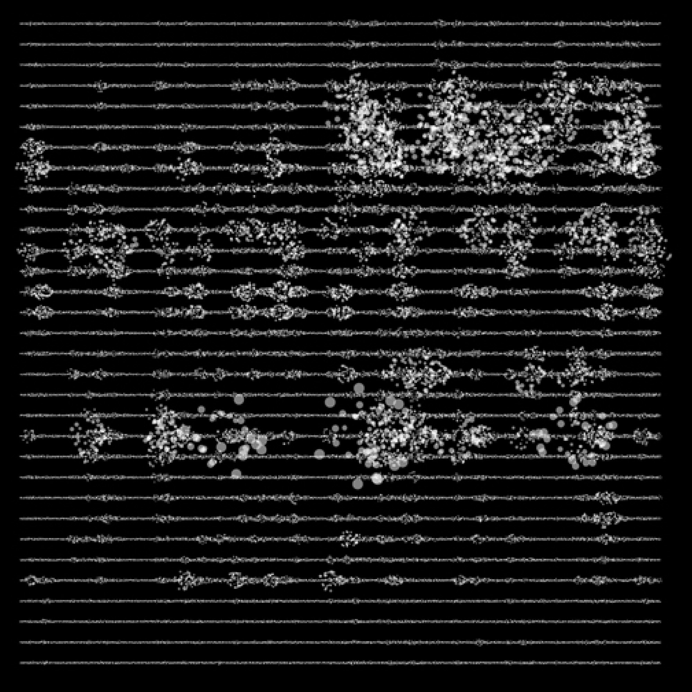

PARTITIONS
MUSICALES
1- Earl Brown
4 systems
1952-1954
2- Marcos Fusinato
Enantiodromia
2007
3- Nicolas Rougeux
Off the Staff
2016

4- John Cage
Partition I
1951

5- Barb Generativ
Partitions sonores
2022
SON GÉNÉRATEUR
DE FORMES
6- Golan Levin et Zachary Lieberman
Messa Di Voce
2003
7- Barb Generativ
Ver sonore
2016
8- Thomas Descheemækere
Graphone type
2013
TYPOGRAPHIE
ASÉMIQUE
9- Alain Satié
Écrit en prose
2010
ÉCRIRE
LE GESTE
10- Kandinsky
Courbes dansantes
1926
11- Studio Dumbar
Holland Danse Festival
2012
12- Laurent Brute
Scratch Graphique
2003
13- Barb Generativ
Dancer Prototype
2022